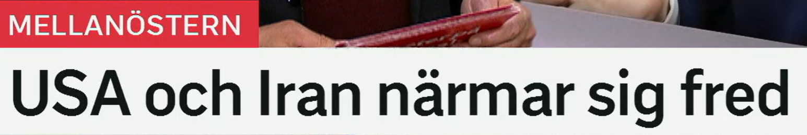
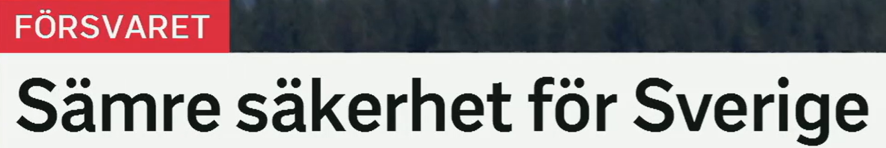
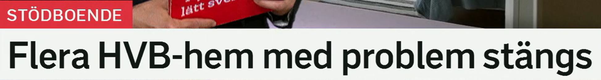
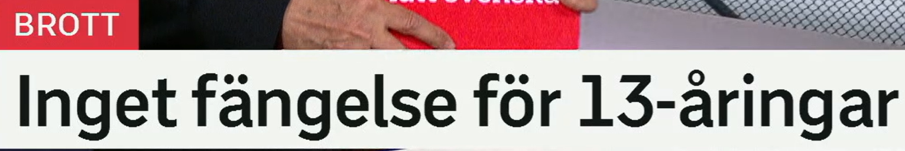
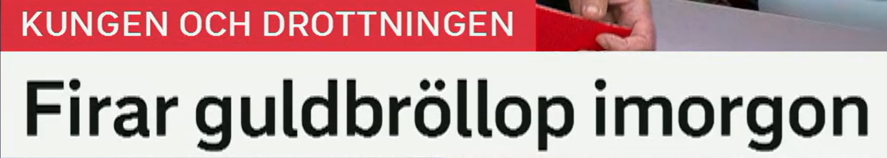

USA och Iran närmar sig fred
美国和伊朗接近和平。
närma sig 表示接近、靠近，可用于地点、时间、协议、和平。
近义表达：kommer närmare 越来越接近，är nära 接近，närmar sig en lösning 接近解决方案。
en fred 和平。搭配：fredsavtal 和平协议，fredssamtal 和谈。
相关词：vapenvila 停火，eldupphör 停火，förhandlingar 谈判。
接近结果
A närmar sig B = A 接近 B。也可说：Ett fredsavtal är nära.

Sämre säkerhet för Sverige
瑞典安全形势变差。
dålig 差的；比较级 sämre 更差，最高级 sämst 最差。
近义表达：försämrad 恶化的，mer osäker 更不安全，lägre säkerhet 更低安全性。
en säkerhet 安全、安全性。国防语境：nationell säkerhet 国家安全。
相关词：trygghet 安全感，försvar 国防，hot 威胁，risk 风险.
比较标题
Sämre säkerhet för X = 对 X 来说安全变差。完整可写：Säkerheten blir sämre för Sverige.

Flera HVB-hem med problem stängs
多家有问题的 HVB 之家被关闭。
多个、若干。不同于 fler 的“更多”比较意味。
近义表达：ett antal 若干，många 许多，fler än en 不止一个。
HVB 是 hem för vård eller boende 的缩写，指照护/住宿机构。
相关词：stödboende 支持性住房，boende 住宿，omsorg 照护，socialtjänst 社会服务。
原形 stänga 关闭；stängs = 被关闭。
近义词：läggs ner 被停办，avvecklas 被撤销，stängs av 被关闭/停用。
被动标题
X stängs = X 被关闭。常见于学校、机构、道路、服务。

Inget fängelse för 13-åringar
13 岁儿童不判监禁/不设监狱刑。
ingen/inget/inga 表示没有。fängelse 是 ett 词，所以用 inget。
Det blir inget beslut i dag. 今天不会有决定。
ett fängelse 监狱，也指监禁刑罚。
相关词：fängelsestraff 监禁刑，straff 惩罚，ungdomsvård 青少年照护处罚。
en 13-åring 13 岁的人；复数 13-åringar。
Många 13-åringar går i högstadiet. 许多 13 岁孩子在初中阶段。
法律否定
Inget X för Y = 对 Y 不设/没有 X。标题短而有力。

Firar guldbröllop imorgon
明天庆祝金婚。
原形 fira 庆祝。
近义词：uppmärksamma 纪念/关注，högtidlighålla 隆重庆祝，ha fest 举办庆祝。
guld 金 + bröllop 婚礼，指金婚，通常为结婚 50 周年。
相关词：bröllopsdag 结婚纪念日，äktenskap 婚姻，diamantbröllop 钻石婚。
明天。也常分写 i morgon。
庆祝标题
Firar X imorgon 省略主语；栏目告诉我们是国王和王后。
复习表：重点词 + 近义词 + 高频用法
| 关键词 | 近义/相关词 | 高频搭配 |
|---|---|---|
| närma sig | komma närmare, vara nära, närma sig lösning | närmar sig fred, närmar sig avtal |
| säkerhet | trygghet, försvar, hot, risk | sämre säkerhet, nationell säkerhet |
| stängs | läggs ner, avvecklas, stängs av | hem stängs, skola stängs, väg stängs |
| fängelse | fängelsestraff, straff, ungdomsvård | inget fängelse, döms till fängelse |
| fira | uppmärksamma, högtidlighålla, ha fest | fira guldbröllop, fira seger |
练习 1
说“双方接近协议”。提示：Parterna närmar sig ett avtal.
练习 2
把“学校被关闭”译成瑞典语。提示：Skolan stängs.
练习 3
说“他们明天庆祝金婚”。提示：De firar guldbröllop imorgon.